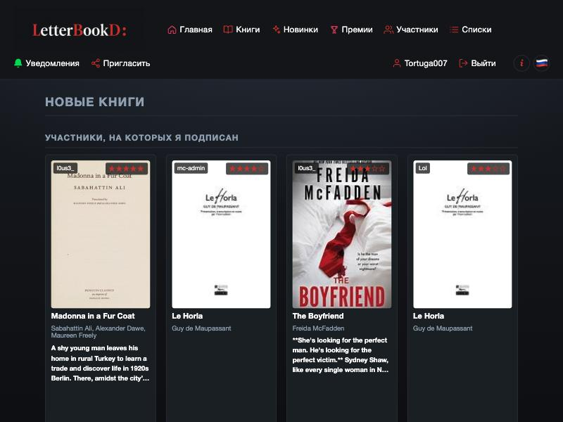

Главная
Зачем это нужно: Увидеть в одном месте, что происходит в твоих клубах: кто недавно добавил какую книгу и с какой оценкой. Это твоя стартовая страница после входа и главный способ найти новые чтения других участников.

Как это устроено
Страница открывается на разделе «Новые книги», он разделён на два блока: «Участники, за которыми я слежу» (те, кого ты добавил в избранное) и «Другие участники» (остальные участники твоих клубов). Каждая карточка показывает обложку, ник участника, его оценку (в звёздах), название, автора и начало его отзыва. Нажми на обложку, чтобы открыть карточку книги, или на ник, чтобы открыть профиль участника.
Цепочки действий
Каждая строка — это триггер в интерфейсе, модалка или форма, которые он открывает, и результат.
| Триггер | Модалка / Поля | Эффект |
|---|---|---|
| Верхняя панель навигации | Ссылки: Главная, Книги, Новинки, Премии, Участники, Списки, Уведомления (зелёный колокольчик, если есть непрочитанное), Пригласить. Справа: Модерация (только если ты админ), ник (профиль), Выход, кнопка «i» (О приложении), кнопка с флагом (язык). | Каждая ссылка открывает свой раздел. Колокольчик «Уведомления» становится зелёным, если есть непрочитанные уведомления. |
| Клик по обложке или названию книги | — | Открывает карточку книги: отзывы, среднюю оценку, кнопки для оценки, предложения и добавления в список. |
| Клик по нику участника | — | Открывает профиль участника (его чтения, отзывы и списки, видимые в ваших общих клубах). |